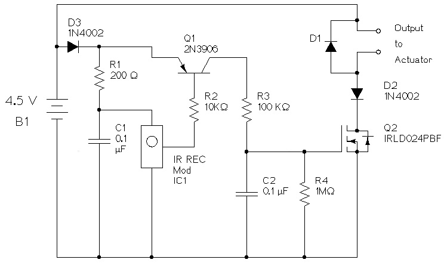

Page written and circuit created in 2015 By Daniel Peirce B.Sc.

(schematic updated April 26, 2015)
The schematic was drawn using the open source program XCircuit on a Debian Linux computer.
IC1 is a infrared detector module designed to detect IR remote codes modulated at 56 KHz. RCA device IR remotes are known to use a 56 KHz carrier. IC1 contains an IR detector diode, an amplifier, a band pass filter and a demodulator. The output contains encoded data related to the keys pressed on the remote. This data is binary and active low.
The components R1 and C1 form a low pass filter for the power supplied to IC1. R1 and C1 are recommended in the datasheet for IC1 on page 3.
The signal from IC1 needs to be modified in two ways before being used to drive the output N channel power MOSFET Q2. The encoding is not relevant to this project; we only want to know when a key is pressed and don't care which key it is. The components Q1, R2, R3, R4 and C2 work together as a combination peak detector and binary logic inverter.
Q1 is a 2N3906 PNP bipolar transistor. In this circuit it acts as an inverting binary switch. When the base terminal is pulled low it allows current to flow from the battery through R3 and into C2. When the base is high no current flows in R3. C2 discharges slowly through R4. R4 is ten times larger than R3 so the voltage on C2 rises much faster than it falls. This removes the encoding from signal since the signal cannot drop fast enough to retain the fast binary data that contains the code.
The codes sent from an RCA remote repeat as long as a button on the remote is pressed but there are gaps in time before the code is repeated. The relatively slow discharge of C2 ensures the voltage on C2 is held at a logic one during the time between code repeats.
It was discovered by trial and error that if C2 was allowed to charge too quickly the circuit would respond to camera flashes. That sensitivity was eliminated by the addition of R3.
Q2 turns off abruptly. As the magnetic field in the solenoid collapses a path is required for current generated by the solenoid. The diode D1 provides that path.
Q2 is a power MOSFET that can handle the current required by the output solenoid. Since a MOSFET requires essentially no current at the gate it does not load C2.
Diodes D2 and D3 were added to block reverse current in case the battery holder plug is inadvertently connected backwards.
| part ID | part description | part number |
|---|---|---|
| C1, C2 | 0.1 μf capacitor | |
| D1 | diode | |
| D2, D3 | 1N4002 diode | |
| IC1 | IR receiver Module 56 KHz | TSOP32156-ND digikey |
| J1, J2 | 2 pin header right angle | |
| Q1 | 2N3906 PNP transistor | |
| Q2 | MOSFET N-CH 60V 2.5A 4-DIP | IRLD024PBF-ND digikey |
| R1 | 200 Ω resistor 1/4 watt | |
| R2 | 10 KΩ resistor 1/4 watt | |
| R3 | 100 KΩ resistor 1/4 watt | |
| R4 | 1 MΩ resistor 1/4 watt | |
| w1-w8 | wire jumper |

A bracket was designed and made to facilitate holding and releasing a string.

More on the bracket can be found on Github.

To the extent possible under law,
Daniel Peirce
has waived all copyright and related or neighboring rights to
Remote IR Actuator.
This work is published from:
Canada.